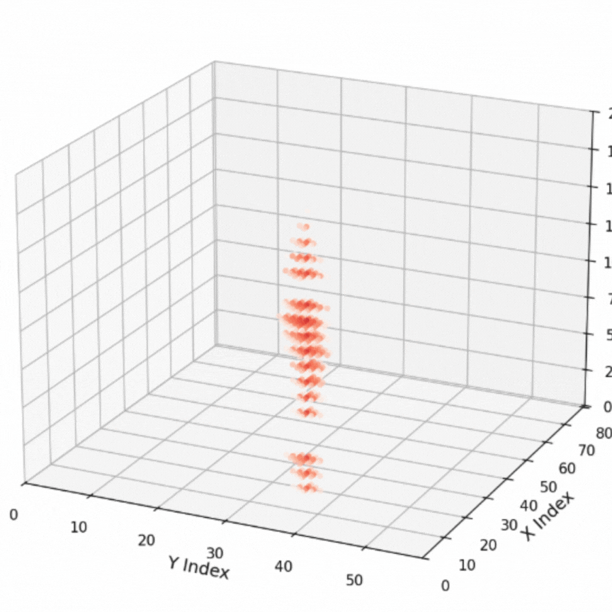

PUMLE
Data Engineering🌍 Innovative data pipeline for geological carbon storage in Brazilian reservoirs. PUMLE transforms complex simulation outputs into streamlined multidimensional arrays, making environmental data accessible and actionable.
✨ Key Features:
- • Multi-format export (NumPy, Zarr, MAT-files, CSV)
- • Cloud integration for seamless data sharing
- • Optimized for large-scale geological simulations
- • Built for environmental impact analysis
🛠️ Technical Stack:
Python
NumPy
Zarr
Cloud Storage
📖 View on GitHub
Open Source Project